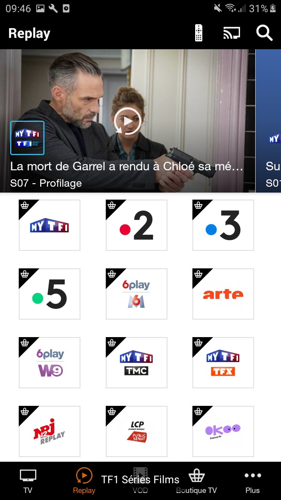
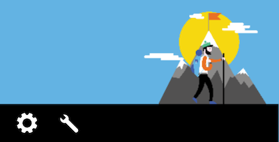
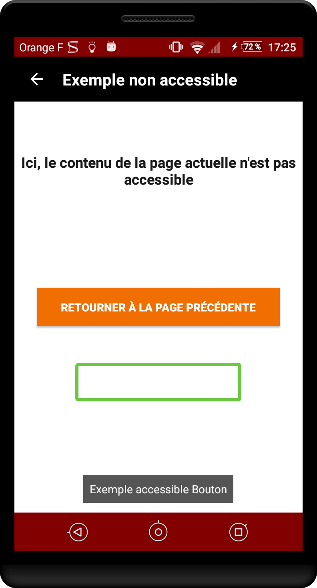
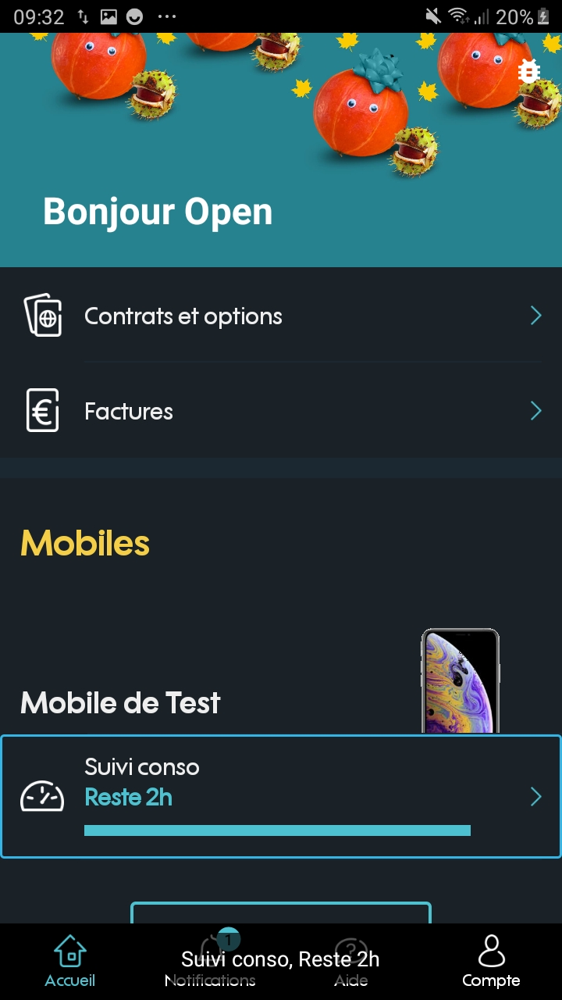

Android design - Vocal navigation
Vocalize the images #
Target : everyone and in particular people with visual impairments.
When : from design, and during development.
Description :
Images must have a text alternative that gives all the information carried by the image to users using voice navigation.
For an image containing text, the alternative will be the text. For an image which provides information in the form of a graph, drawing or other, the alternative will contain all the necessary information present in the image.
Decorative images, do not require a text alternative and therefore should not be vocalized.
To be verified :
- Images carrying information restore this information through their textual alternatives.
Valid example :
The image containing the information of the channel is well vocalized by the screen reader.

WCAG reference:
Vocalize all significant elements #
Target : everyone and in particular the visually impaired.
When : from design, and during development.
Description :
When a user navigates using voice navigation (Talkback for example), every meaningful element on the screen must be vocalized, to be able to use the application without any loss of information.
A text is restituted natively by the screen reader, but some elements require a text alternative to be able to vocalize the information correctly.
It is important to provide a text alternative when the information is not available or sufficient natively, as for components providing information by color, shape, position, sound... All components can receive a text alternative, so it is possible to enrich the native vocalization of an element.
Some images are sometimes associated with text to provide information. For example to present the " unread messages " : a tooltip gives the unread messages number and an image gives the " message " information. In this case, the solution is to use a text alternative on the text with all the necessary information. For example : " 3 unread messages ". It is also possible to use this alternative on the image, but it is necessary to make the text " invisible " for the screen reader.
Example :
Example of an icon that is coupled with text (tooltip) to add information. The icon " mail " coupled with the tooltip value " 3 " indicates that we have " 3 unread mails ". If no textual alternative is added, 2 elements will be vocalized " button without label " and " 3 ".

To be verified :
- Elements are all vocalized and accessible
- The vocalizations are explicit and understandable for each element.
- The interactive elements are vocalized with the associated action.
- The titles of the activities are vocalized
- Items in a list are vocalized independently of each other.
WCAG reference:
Manage the vocalization order #
Target : everyone and in particular the visually impaired.
When : from design, and during development.
Description :
The focus order of Talkback takes into account several parameters: the "logical" reading from left to right and from top to bottom, and the reading of the xml (order of declaration of the elements). Sometimes this is not enough to establish a coherent order, and it is necessary to redefine this reading order.
Example :
In this example, the default reading order is completely dependent on the order in which elements are declared. In this case: vol+, vol-, 1, 2, 3, 4, 5, 6, 7, 8, 9, p+, p-, 0. A more consistent reading order would be 1, 2, 3, 4, 5, 6, 7, 8, 9, 0, vol+, vol-, p+, p-.

To be verified :
- The vocalization order follows an understandable and logical order
WCAG reference:
Vocalize content change #
Target : everyone and in particular the visually impaired.
When : from conception, and during development.
Description :
When content is dynamically modified after a user action, it must be vocalized. Otherwise, a blind user cannot understand that an action has been triggered.
A simple vocalization may be sufficient to notify the user. It is very easy to trigger vocalizations with TalkBack : you just need to use the announceForAccessibility method.
Note: the announceForAccessibility method is available on any element that inherits from View.
It is also possible to specify to a view that it is a live region, i.e. its content can be dynamically modified. This will result in generating vocalizations with TalkBack for example. A typical example of use: on a form, if the user makes an error and an error message appears, the view containing the message must be defined as a live region.
The method setAccessibilityLiveRegion takes as parameter a mode. There are 3 modes:
ACCESSIBILITY_LIVE_REGION_NONE: this view is not a live region. This is the default value for most views.ACCESSIBILITY_LIVE_REGION_POLITE: vocalizations are performed on the view changes. These vocalizations are "polite" and have a lower priority than system vocalizations for example.ACCESSIBILITY_LIVE_REGION_ASSERTIVE: vocalizations are performed on the view changes. These vocalizations are " rude ". They are prioritized and immediately vocalized.
Note: the setAccessibilityLiveRegion method is available on any element that inherits from View.
To be verified :
- Temporary messages displayed on the screen (such as Toast) are vocalized.
- Dialogs opening are vocalized
- Transitions between activities are vocalized (by the title of the new activity for example).
- Error messages are vocalized
- Horizontal scrolls are vocalized
- The change of a part of the screen is vocalized.
- The change of a screen element is vocalized if it is useful for the user to be informed about it.
Do not vocalize the decorative and hidden elements. #
Target : everyone and in particular the visually impaired.
When : from design, and during development.
Description :
To not confuse navigation with a screen reader, it is necessary to vocalize only the significant elements. Decorative elements, such as illustrations, should not be vocalized.
Although invisible on the screen, some elements could be read by the screen reader (elements positioned outside the visible area or hidden by other elements). Overlaying frames is common, but it creates very heavy accessibility problems if it is not done correctly.
A frequent case of this problem: fragments. A bad use of fragments can lead to an impossible navigation with the screen reader.
See the article on use of fragments for more information.
To be verified :
- No invisible elements are vocalized
- Decorative elements are ignored and are not vocalized.
Examples :
By decomposing the image :
- pas de
contentDescription 
imageView.setContentDescription("paramètres")-
imageView.setContentDescription("éditer le nom de l’image")
In this example, the frame with green border corresponds to the Talkback focus. Its vocalizes a content behind the active view.

WCAG reference:
Group the elements #
Target : everyone and in particular the visually impaired.
When : from design, and during development.
Description :
It is recommended to group the linked elements for vocalization when this increase efficiency and comprehension.
For example, in a music application, it is more useful to group together the music title, artist name and duration vocalization in one block, rather than vocalizing them separately and making navigation more cumbersome.
Care must be taken to find the right balance between navigation and vocalization. Vocalizing too much information in one block will be detrimental to listening. Having no elements grouped together will increase the amount of navigable elements and therefore make navigation more cumbersome.
To be verified :
- Linked elements are grouped in the same block of announcements for vocalization
- Multidimensional information respects a good balance between the number of blocks and the number of contents in each block.
Valid example :
Several elements are grouped to improve navigation

WCAG reference:
Enable header navigation #
Target : everyone and in particular the visually impaired.
When : from design, and during development.
Description :
Within the same screen, content have sometimes different sections, with a header for each of them. It is possible with the Talkback screen reader to navigate by headings, rather than by elements. This makes it faster for a user to navigate between sections.
To recognize headers, an attribute in the XML layout must be added to the elements : accessibilityHeading
To be verified :
- Headers are navigable with the Talkback Navigation "Heading" setting
WCAG reference:
Enable navigation by controls #
Target : everyone and in particular the visually impaired.
When : from design, and during development.
Description :
With Talkback, users can choose to navigate between the different controls (buttons, checkboxes, input fields, etc...) of the screen, rather than element by element. This allows them to interact more quickly with the application. You must therefore be careful with "custom" elements, which may not be recognized as controls.
To be verified :
- The interactive elements are all navigable with the Talkback Navigation per Control setting